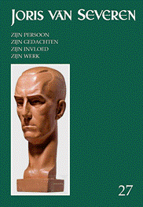
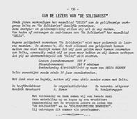

De redactie van
het nieuwe Jaarboek Joris van Severen werd
recent afgesloten, waarbij volgende bijdragen weerhouden
werden:
Met deze aflevering zijn
we aan het 27e Jaarboek
Joris van Severen toe. We brengen andermaal een ruime
verscheidenheid aan bijdragen die op een of andere wijze
inzoomen op de ondertitel van deze reeks: Joris van Severen,
zijn persoon, zijn ideeën, zijn invloed en zijn werk. Een
overzicht:
Dank zij de recente
voortreffelijke biografie van Willem Huberts over Wouter Lutkie1
zijn we op de hoogte van diens bijwijlen intensieve contacten
met geestesgenoten in de zuidelijke Nederlanden. In zijn essay De relatie Wouter Lutkie, Joris van
Severen en het Verdinaso gaat Ruud Bruijns dieper op dit thema
in, dat ook na de oorlog een vervolg kende rond o.a. Louis
Gueuning.
Pieter
Jan Verstraete kon de hand
leggen op en collectie van het eerder zeldzaam te vinden
weekblad ‘Ik zal handhaven!’
In De korte
geschiedenis van het weekblad van het Verdinaso Nederland
gaat hij na welke speerpunten in deze door Ernst Voorhoeve
geredigeerde publicatie centraal stonden.
In Pol le Roy, dinaso en dichter
schetst Jan Creve een
biografisch portret van de vooraanstaande dinaso die met de
oorlog “aan de verkeerde kant van de geschiedenis” kwam te
staan, maar ergens toch steeds weer een dinaso-reflex behield.
De auteur besteedt ook veel aandacht aan het dichterschap van Le
Roy dat, ten gevolge van z’n oorlogsverleden slechts laattijdig
aan erkenning toekwam.
Met Aan mijn kinderen legde
de vooraanstaande Noord Nederlandse Dinaso Henri Bruning destijds ten
overstaan van zijn kinderen verantwoording af over z’n politieke
inzichten. Ook hij verzeilde tijdens de Tweede Wereldoorlog in
de collaboratie met de bezetter, evenwel met behoud van wat het
Verdinaso hem bijgebracht had omtrent mens en samenleving.
Henk Tijssen
verdiepte zich in de geschiedenis van de Friese beweging i.c. Tsjalling
Terpstra en het Frysk Nasjonael Front (FNF).
Voor de meesten van ons
betekent deze thematiek het betreden van een terrein waarover
we tot nog toe heel weinig afwisten, ook al werd daar een
ideëel terrein betreden dat in heel wat parallel liep aan wat
in het Verdinaso beleden werd.
Na de Tweede
Wereldoorlog werden meerdere pogingen ondernomen om de politieke
en maatschappelijke idealen van het vooroorlogse Verdinaso nieuw
leven in te blazen. De
Solidaristische Beweging (1974-1979) was
er daar een van. Hans Nelis volbracht het er de
geschiedenis van te boekstaven.
Roni
Ranke, een pseudoniem van
Ronald Evrard, heeft al meerdere dichtbundels op zijn actief.
Aan zijn aan Joris van Severen
gewijd gedicht om dit 27e Joris van Severen jaarboek
waardig af te sluiten.
Mocht u de
ledenbijdrage voor 2023 nog niet vereffend hebben, dan kan
bovenstaande kennisname u er allicht van overtuigen dat ook
ons 27e jaarboek beslist weer de moeite waard
wordt. Alle gegevens daaromtrent vindt u op de voorafgaande
pagina. Het jaarboek verscheen in de loop van de meimaand.
Epiloog bij Jaarboek JvS 27
(2023)

Mededeling in
‘Delta’ van november 1980